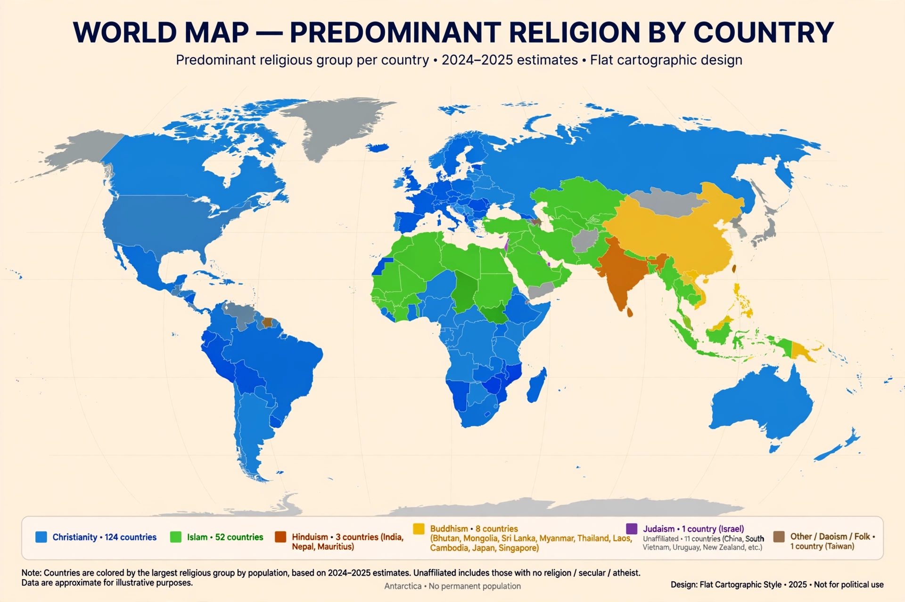

This article lists religious populations by number of adherents and by country. Estimates are drawn principally from the Pew Research Center's studies of the global religious landscape and the ARDA (Association of Religion Data Archives). Global totals are approximate and methods differ between sources; religious identification is self-reported in censuses and surveys where available.
| Religion | Adherents | Share of world population |
|---|---|---|
| Christianity | ~2.38 billion | ~31% |
| Islam | ~1.91 billion | ~25% |
| Religiously unaffiliated | ~1.19 billion | ~15% |
| Hinduism | ~1.19 billion | ~15% |
| Buddhism | ~324 million | ~4% |
| Folk religions | ~430 million | ~6% |
| Other religions | ~61 million | ~1% |
| Judaism | ~14.8 million | ~0.2% |
| Sikhism | ~26–30 million | ~0.4% |
| Jainism | ~4–5 million | ~0.1% |
| Baháʼí Faith | ~5–8 million | ~0.1% |
Within Christianity, the largest groups are Roman Catholics (about half of all Christians), Protestants (including Pentecostals), Eastern Orthodox and Oriental Orthodox churches. Within Islam, Sunni Muslims form the large majority (roughly 87–90%), with Shia Muslims comprising most of the remainder. Hinduism is geographically concentrated: more than 90% of Hindus live in India. The religiously unaffiliated category includes atheists, agnostics and people describing their religion as "nothing in particular"; it is the majority category in several countries in Europe and East Asia.